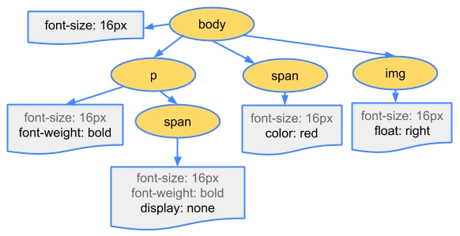
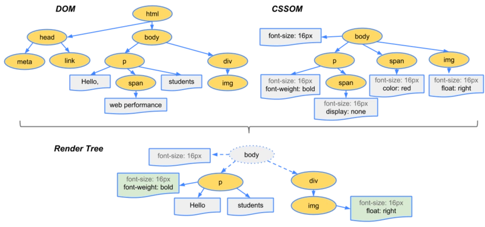

浏览器底层渲染机制
浏览器底层渲染机制
打开页面输入网址
1 | 1. 客服端会从服务器获取需要渲染页面的源代码 |
关于CSS资源加载
1 | 1. 遇到的是偶 <style> 内嵌样式 由于这些直接就在我们源代码上 所以直接 就同步的 交给GUI渲染线程解析 |
关于script加载
1 | 1. 遇到script 资源请求 默认都是同步的 必须基于 HTTP网络线程 把资源请求回来之后 并且 交给JS渲染线程 解析完毕之后 GUI渲染线程才能向下走 所以 script 也会阻碍GUI渲染 |

关于 img 或者 音视频资源
1 | 1. 遇到这些资源(异步) 也会开辟一个 HTTP网络线程 然后请求资源 GUI继续 向下解析 当GUI渲染解析完毕之后 在去渲染图片 和音视频 |
预加载
1 | Webkit浏览器预测解析：chrome的预加载扫描器html-preload-scanner通过扫描节点中的 “src” , “link”等属性，找到外部连接资源后进行预加载，避免了资源加载的等待时间，同样实现了提前加载以及加载和执行分离。 |
页面渲染步骤
1 | 1. DOM TREE(DOM树) : 自上而下渲染完页面 整理好整个页面DOM结构关系 |
DOM树

CSSOM树

RENDER树

1 | 1. 请求回来的源代码之后 GUI渲染线程 从下向上 解析代码 解析完毕之后 生成DOM TREE |
render tree 生成页面
1 | 1. layout 布局(页面) 根据 render tree 计算他们在设备视口内的确切位置和大小 这个计算阶段就是回流 -> 布局 或者 重排 回流 |

性能优化 CRP:关键渲染路径
1 | 1. 一种性能优化的指标 |
性能优化 script
1 | 1. 尽可能把 标签 放在页面底部 body 部位 防止它 阻塞GUI渲染 对于部分 script 要使用 async defer |
性能优化 img
1 | 1. 主要方式就是懒加载 第一次加载页面的时候 不要 加载请求图片 哪怕他是异步的 但是也占据了HTTP并发数量 导致其他资源要延后请求 |
性能优化 减少Layout(回流、重拍)/Painting(重绘)
1 | 1. 第一次加载页面的时候 必然会有依次回流和重绘 |
1 | 1. 回流/重拍 就是分析了元素所在的位置 和 大小 还有分层 所以 当元素的大小 位置 (当页面的布局和几何信息发生了变化的时候) 就会触发回流 和 重拍 因为你的位置 和 大小改变了 就需要浏览器 重新计算渲染和布局 比如你拉动浏览器的视口之后 元素的大小就会改变 所以就需要重新计算 |
当代浏览器的渲染队列机制
1 | 在当前上下文操作中 遇到一行修改样式的代码 并没有立即通知浏览器渲染 而是把其放在渲染队列中 接下来 看是否还有修改样式的代码 如果有继续放在在渲染队列中 一直到再也没有 修改样式的代码 或者 遇到一行获取样式的操作 然后渲染队列 就会通知浏览器 渲染 这样的好处 是 只会触发一次回流 重拍 |
1 | 1. 我们浏览器 在重新渲染元素的时候 会从 渲染队列里面去看看哪些渲染任务已经完成了 |
1 | 1.我们在创建元素 和新增元素的时候 也会引发回流 |
1 | let arr = ['张三','李四','王五'] |
1 | // 所以我们可以如下写 但是也会存在问题 可能因为页面中 把原始容器的的内容变成字符串拼接 |
1 | // 还有一种方式叫文档碎片 向当于一个文档碎片 |
1 | 把动画等频发样式改变操纵 运用到 postition:fixed/absolute 上 脱离文档流 自己变成独立一层 |
1 | 修改元素的 transform / opacity(filters) 这种会体改CSS 硬件加速 不会引发DOM回流 弊端就是消耗浏览器内存 |
相关推荐

公告
感谢访问本站，如喜欢请收藏。本站主要分享前端知识，立志成为资深前端工程师，但目前是一个前端界的小学生 若喜欢可以打赏请博主喝一杯冰阔落
另外请大家多多支持淼哥的开源项目
https://github.com/flipped-aurora/gin-vue-admin
🌟🌟欢迎大家start 🌟🌟
欢迎加入博主的前端技术交流群